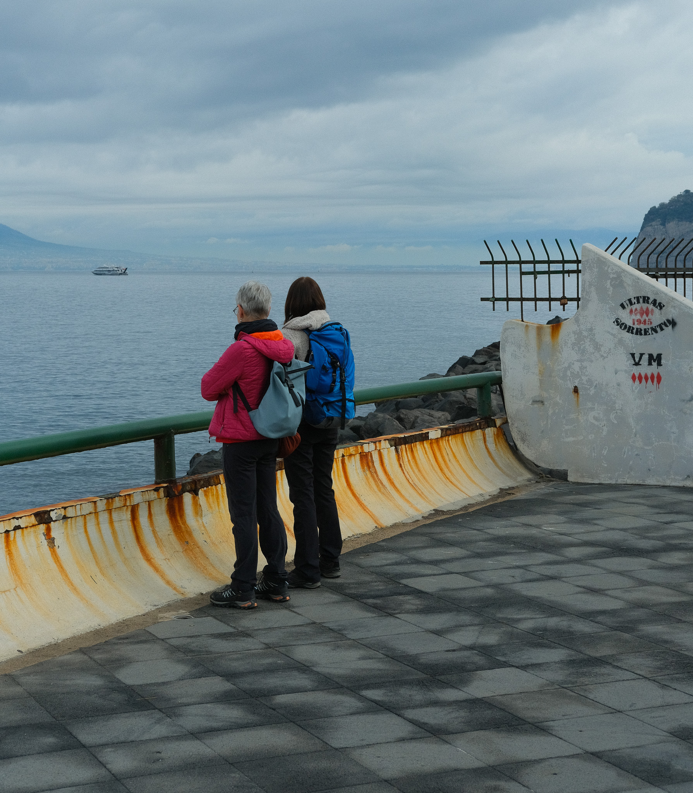
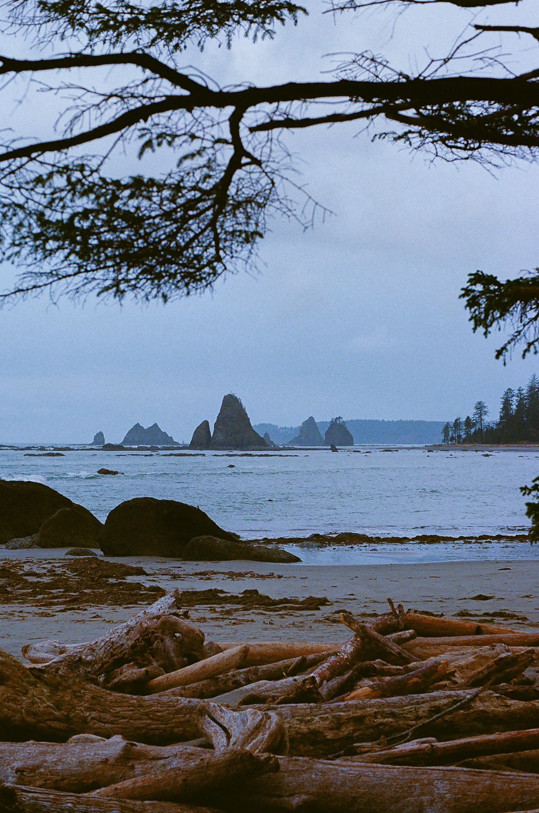

Kevin J Nally
About
Structures
Photography
Updates
Resume
Contact
Photography
All
Nature
Architecture
Portraits
Street
PNW Forest, Fujifilm X-T30
Pantheon, Fujifilm X-T30

Sorrento, Fujifilm X-T30

Pacific, Olympus OM4